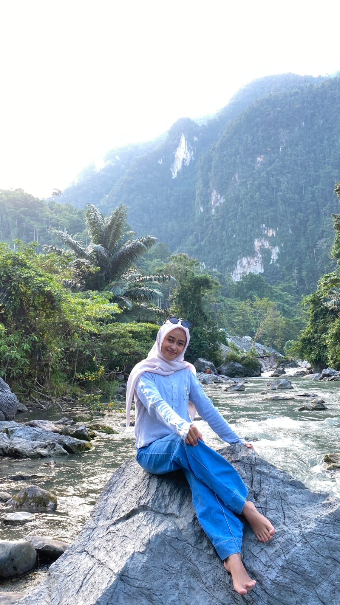

HTML
Mempelajari struktur halaman website agar tersusun dengan baik.
Web FundamentalHalo, selamat datang!
Saya mahasiswa Program Studi Informatika, konsentrasi Website, angkatan 2024 di Universitas Cokroaminoto Palopo. Saya terus belajar, berkreasi, dan mengembangkan kemampuan di dunia teknologi.

Foto Profil Kamu

STUDENT PORTFOLIO
Perjalanan kecil menuju masa depan yang besar.
Setiap proses adalah kesempatan untuk bertumbuh dan menjadi lebih baik.
MY PERSONAL MOTTOSaya adalah mahasiswa Universitas Cokroaminoto Palopo, Program Studi Informatika dengan konsentrasi Website, angkatan 2024.
Saya memiliki ketertarikan pada dunia website, teknologi digital, dan pembuatan halaman web. Melalui proses perkuliahan, saya ingin memahami bagaimana website dirancang, dibangun, dan dipublikasikan agar dapat digunakan dengan mudah.
Di luar kegiatan belajar, saya memiliki hobi makan dan menikmati berbagai macam makanan. Bagi saya, belajar dan menikmati hal-hal sederhana adalah bagian dari perjalanan hidup yang menyenangkan.
Kenali biodata saya →Informasi singkat mengenai identitas dan pendidikan saya.
Universitas Cokroaminoto Palopo
Catatan: informasi pribadi yang ditampilkan dapat disesuaikan dengan kebutuhan tugas.
Bidang yang ingin saya pelajari dan kembangkan.
Mempelajari struktur halaman website agar tersusun dengan baik.
Web FundamentalMengenal desain, warna, layout, dan tampilan website responsif.
Web DesignMempelajari interaksi dan fitur dinamis pada halaman website.
InteractivityMemahami cara mengunggah file dan memublikasikan website ke internet.
Web Publishing*Bagian ini menunjukkan bidang yang dipelajari atau diminati, bukan klaim tingkat keahlian profesional.
Portofolio ini dibuat sebagai media perkenalan diri sekaligus latihan praktik Administrasi Website. Melalui proyek ini, saya belajar menggabungkan struktur HTML dengan CSS untuk menghasilkan halaman yang informatif, menarik, dan responsif.
Saya juga ingin memahami proses pengelolaan file website, pengujian tampilan, dan publikasi melalui layanan hosting.
Lihat Kesimpulan ↗Menyusun elemen dan struktur halaman web.
Mengatur warna, tipografi, jarak, dan layout.
Memastikan tautan, foto, dan tampilan berjalan baik.
Mempelajari pengunggahan file ke layanan hosting.
Terima kasih telah mengunjungi website portofolio saya. Semoga karya sederhana ini menjadi langkah awal untuk terus belajar, mengembangkan kreativitas, dan memahami dunia teknologi informasi.
↑ Kembali ke Beranda